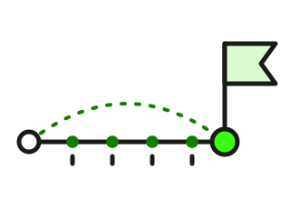

Laufzeit: kurz oder lang?
Die Laufzeit entscheidet, wie stark deine Anleihe auf das allgemeine Zinsniveau reagiert – als Risiko und als Chance. Sechs Karten, jede mit Schaubild. Lesezeit: etwa 5 Minuten.

Was Laufzeit heißt
Jede Anleihe hat ein festes Ende: die Fälligkeit. An diesem Tag bekommst du 100 % des Nennwerts zurück – egal, wo der Kurs vorher stand. Die Zeit bis dahin ist die Restlaufzeit.
Dazwischen zahlt die Anleihe ihren Kupon, meist einmal im Jahr. Das Jahr steht im Namen: „2031“ heißt, 2031 gibt es das Geld zurück.
So läuft eine Anleihe
Fünf Kupons bis Mai 2031 – der letzte kommt zusammen mit der Rückzahlung. Die Restlaufzeit schrumpft jeden Tag: Eine 10-jährige Anleihe ist nach acht Jahren eine 2-jährige.
Kurz gesagt: Restlaufzeit = Zeit bis zur Fälligkeit. Bis dahin gibt es den Kupon, am Ende 100 %.
Kurz, mittel oder lang
Kurz heißt bis etwa 3 Jahre, mittel 3 bis 7, lang alles darüber – bis zu 30, 50 oder 100 Jahren. Die Grenzen sind Faustregeln, keine Gesetze.
Der Unterschied ist nicht der Zins allein. Es ist, wie stark der Kurs zwischendurch schwankt, wenn sich das allgemeine Zinsniveau ändert: kaum bei kurzen, heftig bei langen Laufzeiten.
Drei Klassen, eine Frage: Wie stark schwankt der Kurs?
Kursänderung je Prozentpunkt allgemeines Zinsniveau, Anleihe mit 3 % Kupon, gerundet.
Kurz gesagt: Je länger die Laufzeit, desto stärker schwankt der Kurs – in beide Richtungen.
Das Risiko: Zinsniveau steigt, Kurs fällt
Deine Anleihe zahlt 3 %. Steigt das allgemeine Zinsniveau auf 4 %, bringen neue Anleihen mehr – deine ist nur noch mit Abschlag zu verkaufen. Der Kurs fällt so weit, bis sie einem Käufer wieder 4 % bringt.
Wie weit, hängt an der Restlaufzeit. Faustregel: Kursverlust in % ≈ Duration × Prozentpunkte. Die Duration ist kürzer als die Restlaufzeit – bei 10 Jahren rund 8,5, bei 30 Jahren rund 20. Wer bis zur Fälligkeit hält, bekommt trotzdem 100 % – sitzt aber so lange mit dem alten Zins fest.
Zinsniveau steigt um 1 Prozentpunkt – der Kurs fällt
Anleihe mit 3 % Kupon, Kurs 100. Balken im selben Maßstab wie bei Karte 4 (Kursgewinn), damit der Unterschied sichtbar bleibt. Rechne deine eigene im Rechner nach.
Kurz gesagt: Lange Laufzeit und steigendes Zinsniveau = fallender Kurs. Halten bis zur Fälligkeit rettet den Kurs, nicht die verlorenen Jahre.
Die Chance: Zinsniveau fällt, Kurs steigt
Dieselbe Mechanik läuft auch andersherum. Fällt das allgemeine Zinsniveau, steigt der Kurs deiner Anleihe – und die lange Laufzeit, die vorher das Risiko war, ist jetzt der Hebel nach oben.
Dazu kommt die zweite Chance: Du hast dir den Zins für Jahre gesichert. Wer zehn Jahre zu 3 % gekauft hat, bekommt die 3 % bis zum Schluss – auch wenn neue Anleihen längst nur noch 1,5 % bringen.
Zinsniveau fällt um 1 Prozentpunkt – der Kurs steigt
Nach oben etwas mehr als nach unten – bei 30 Jahren +22 % statt −17 %, gleicher Maßstab wie bei Karte 3. Fachwort: Konvexität.
Kurz gesagt: Lange Laufzeit ist eine Wette auf fallendes Zinsniveau – und ein fester Zins für Jahre.
Kurz hat auch ein Risiko
Kurze Laufzeit fühlt sich sicher an: Der Kurs schwankt kaum, das Geld kommt bald zurück. Aber dann musst du neu anlegen – zum Zins von morgen. Ist das allgemeine Zinsniveau gefallen, bringt die nächste Anleihe weniger.
Das ist das Wiederanlagerisiko. Die Chance daran: Steigt das Zinsniveau, bist du schnell wieder frei und legst zum höheren Zins neu an – ohne Kursverlust.
Kurz anlegen, wenn das Zinsniveau fällt
Alternative: einmal 6 Jahre zu 3,5 % – am Anfang weniger, am Ende mehr.
Kurz gesagt: Kurz schützt den Kurs, nicht den Zins. Lang schützt den Zins, nicht den Kurs.
Die passende Laufzeit
Die einfachste Regel: Fälligkeit = der Tag, an dem du das Geld brauchst. Auto in zwei Jahren? Zwei Jahre. Studium 2031? Fällig 2031. Dann ist der Kurs zwischendurch egal.
Weißt du es nicht – oder willst du Zinseinkommen für lange? Dann teile auf: mehrere Anleihen mit Fälligkeiten in 1, 2, 3, 4 und 5 Jahren. Jedes Jahr wird eine fällig und wandert zum aktuellen Zins ans Ende – die Anleihenleiter.
Die Leiter: fünf Sprossen, jedes Jahr eine fällig
Das fällige Geld wird als neue 5-jährige angelegt – die Leiter läuft weiter.
Staatsanleihen in Euro, 1–3 Jahre →Kurz gesagt: Laufzeit nach dem Termin wählen. Ohne Termin: aufteilen statt raten.
Diese Seite erklärt die Laufzeit. Sie empfiehlt keine Anlage. Die Zahlen sind gerundet.
Datenquellen und Methodik
Kursänderungen. Gerechnet für eine Anleihe mit 3 % Kupon (jährlich) zum Kurs 100 bei einer Änderung des allgemeinen Zinsniveaus um einen Prozentpunkt: 2 Jahre −1,9 % / +1,9 %, 5 Jahre −4,5 % / +4,7 %, 10 Jahre −8,1 % / +9,0 %, 30 Jahre −17,3 % / +22,4 % – im Text auf ganze Prozent gerundet, die Klassen-Kacheln auf runde Werte. Faustregel: Kursänderung in % ≈ modifizierte Duration × Änderung in Prozentpunkten. Modifizierte Duration derselben Anleihe: 2 Jahre 1,9, 5 Jahre 4,6, 10 Jahre 8,5, 30 Jahre 19,6. Bei großen Änderungen und langen Laufzeiten überschätzt die Faustregel den Verlust und unterschätzt den Gewinn – das ist die Konvexität.
Laufzeitklassen. Kurz bis 3 Jahre, mittel 3 bis 7, lang über 7 Jahre – die Einteilung dieser Website (wie auf den Seiten nach Laufzeit); andere Quellen ziehen die Grenzen bei 1, 5 und 10 Jahren. Die Zinsen im Wiederanlage-Beispiel sind angenommen.